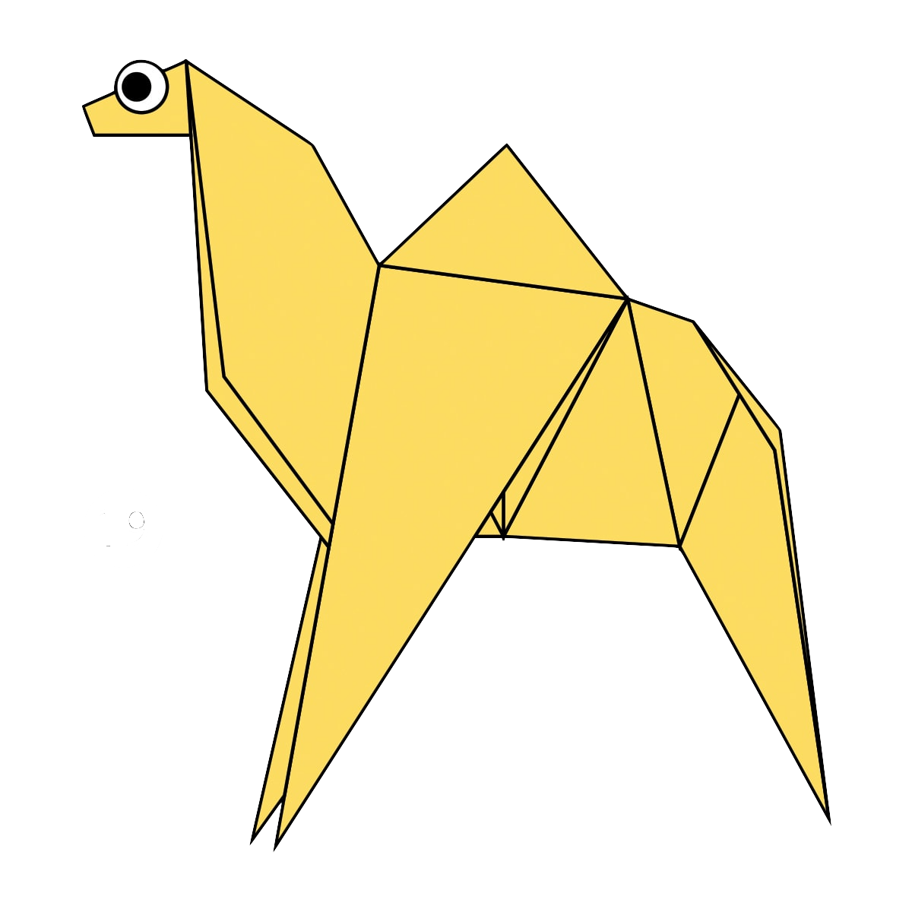
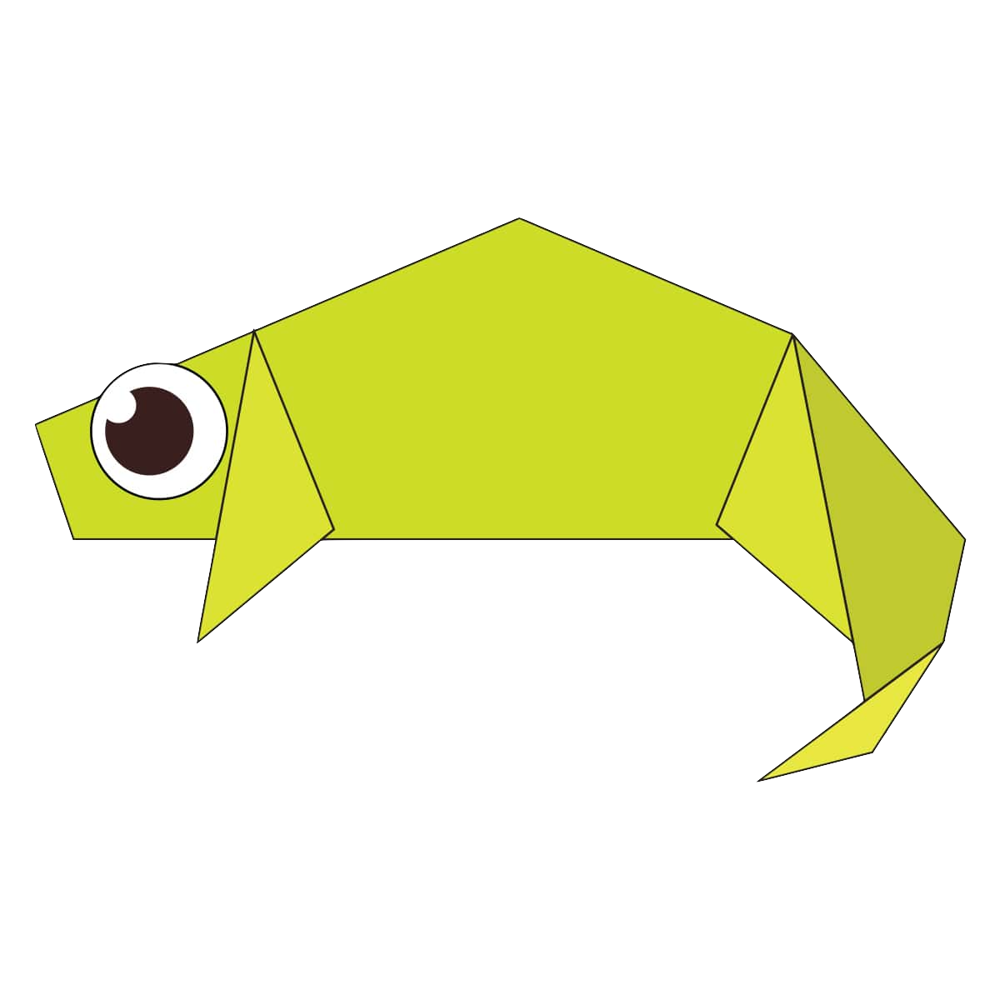
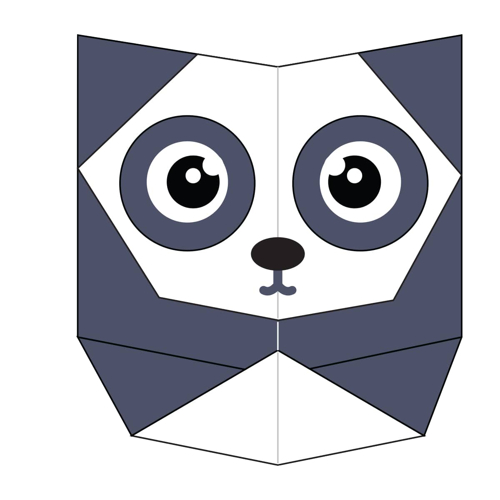

Origami Designs
About Us
Follow Us

Interesting facts about Camel
- There are two types of camels: One humped or “dromedary” camels and two humped Bactrian camels.
- Camels have three sets of eyelids and two rows of eyelashes to keep sand out of their eyes.
- Camels have thick lips which let them forage for thorny plants other animals can't eat.

Interesting facts about Chameleon
- THEY MAINLY CHANGE COLOR IN ORDER TO COMMUNICATE OR REGULATE BODY TEMPERATURE.
- SKIN CRYSTALS ENABLE THEM TO CHANGE COLOR AT WILL.
- UNLIKE MANY LIZARDS, CHAMELEONS CAN'T REGROW THEIR TAILS.

Interesting facts abouts Pigeon
- Pigeons are incredibly complex and intelligent animals.
- Pigeons mate for life, and tend to raise two chicks at the same time.
- Pigeons are renowned for their outstanding navigational abilities.

Interesting facts abouts Teddy-Bear
- American multi-billionaire investor Paul Greenwood owned the largest collection of teddy bears.
- The first British Teddy Bear Festival was held in 1989 in London.
- Animation movie giant Walt Disney produced the first colour cartoon film featuring teddy bears – Alice and the Three Bears – in 1924.

Interesting facts abouts Panda
- Prehistoric pandas lived up to 2 million years ago.
- Pandas have carnivorous teeth, but they eat bamboo and fruit.
- An adult can eat 12–38 kilos of bamboo per day!

Interesting facts abouts Cicada
- Cicadas can survive a huge fall as babies, or nymphs.
- Most have red-orange eyes.
- Cicadas don’t sing at night.